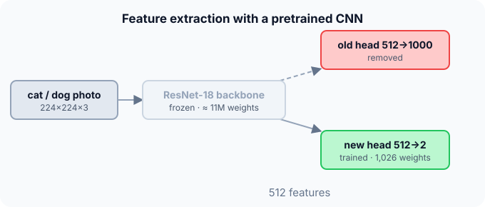

Prerequisites
- CNNs.
- Dense layers and parameter counts.
- Overfitting on small datasets.
The analogy
Everyday analogy
A professional photographer who starts painting doesn't relearn what light, shapes and composition are; they reuse that knowledge and only learn brushwork.
A pretrained network's early layers know general visual features. Transfer learning reuses them and trains only the part specific to the new task.
How it works
Two strategies: Feature extraction: freeze the pretrained layers and train only a new head. Fine-tuning: then also unfreeze some top layers and train them with a small learning rate.
Start with the parameter count by hand
ResNet-18: about 11.7 million parameters; its last layer maps 512 features to 1,000 ImageNet classes. New task: cat vs dog. Predict, then open "Check".
Example: predict before you read
Step 1. Parameters of the original last layer.
Check
$512 \cdot 1000 + 1000 = 513{,}000$.
Step 2. Cover the next line and guess: parameters of the new head (512 → 2).
Check
$512 \cdot 2 + 2 = 1{,}026$.
Step 3. With the backbone frozen, what fraction of the model's parameters are trained?
Check
About $1{,}026 / 11.2$ million ≈ 0.01%. Everything else is reused as is.

Quick recall: Before reading further, cover the text above and say out loud: which part of the pretrained network is replaced, and why?
Check your answer
The final classification layer, because it predicts the old task's 1,000 classes; the new task needs a layer with its own 2 outputs.
Finish the picture: fine-tuning
After training the new head, you unfreeze the last block of ResNet-18 (about 8.4 million weights).
- Trainable parameters now. Predict roughly how many.
Check
About 8.4M + 1,026 ≈ 8.4M: far more capacity to adapt, but also more risk of overfitting 2,000 images.
- Learning rate. Predict a sensible choice.
Check
Much smaller than for the head, e.g. 10–100 times smaller, so the pretrained features change gently.
Quick recall: Without scrolling up, say out loud: when should you fine-tune more layers rather than only the head?
Check your answer
When you have more data or the new images differ a lot from ImageNet; then higher layers also need to adapt.
Full worked calculation
What actually trains during transfer learning: the new head. To keep the numbers readable, the frozen network outputs 3 features (a real ResNet-18 gives 512) for one photo of a dog: $f = [0.2, 1.5, 0.3]$. The new head has weights $W = \begin{bmatrix} 0.5 & -0.2 & 0.1 \\ -0.3 & 0.4 & 0.2 \end{bmatrix}$ (row 1 = cat, row 2 = dog), biases 0, learning rate 0.5.
| Cat | Dog (true) | |
|---|---|---|
| Logit before | −0.17 | 0.60 |
| Probability before | 0.317 | 0.683 |
| Gradient $p - y$ | 0.317 | −0.317 |
| Logit after one step | −0.547 | 0.977 |
| Probability after | 0.179 | 0.821 |
-
1Frozen features
$$f = \text{backbone}(\text{photo}) = [0.2,\; 1.5,\; 0.3]$$The pretrained layers are not updated. They work as a fixed feature extractor: feature 2 might be "furry ears", learned from ImageNet's 1.2 million images.
-
2Logits of the new head
$$z_{\text{cat}} = 0.5 \cdot 0.2 - 0.2 \cdot 1.5 + 0.1 \cdot 0.3 = -0.17, \qquad z_{\text{dog}} = -0.06 + 0.6 + 0.06 = 0.60$$The head is a single dense layer: one dot product per class.
-
3Softmax and loss
$$p = \frac{[e^{-0.17}, e^{0.6}]}{e^{-0.17} + e^{0.6}} = [0.317,\; 0.683], \qquad L = -\ln 0.683 = 0.381$$The randomly initialised head already leans towards dog, but only weakly.
-
4Gradient of the head only
$$\frac{\partial L}{\partial z} = p - y = [0.317,\; -0.317], \qquad \frac{\partial L}{\partial W_{\text{dog}}} = -0.317 \cdot f = [-0.063,\; -0.475,\; -0.095]$$Each class row's gradient is its error times the features. The largest feature (1.5) gets the largest change. No gradient flows into the frozen backbone.
-
5Update and check
$$W_{\text{dog}} = [-0.268,\; 0.637,\; 0.248], \quad z = [-0.547,\; 0.977] \;\Rightarrow\; p_{\text{dog}} = 0.821, \; L = 0.197$$One step raised the dog probability from 0.68 to 0.82 and halved the loss. Only 6 numbers (8 with biases) changed.
-
6At real scale
$$512 \cdot 2 + 2 = 1{,}026 \text{ trainable} \quad \text{vs} \quad 11.2 \text{ million frozen} \;\Rightarrow\; 0.009\%$$Training under 0.01% of the weights is why transfer learning works with 2,000 photos and a laptop. Later, you can "fine-tune": unfreeze the top layers and train them with a much smaller learning rate.
What the numbers tell us
Transfer learning reuses a pretrained network as a fixed feature extractor and trains only a new final layer. Here one step took $p_{\text{dog}}$ from 0.68 to 0.82.
With few examples, train only the head; with more data, also fine-tune the top layers, gently.
The rule in plain words
Load a model pretrained on a large dataset, remove its task-specific output layer, add a new head for your classes, and freeze the rest. Train the head.
If you have enough data, unfreeze the top layers and fine-tune everything with a small learning rate. Preprocess inputs exactly as in pretraining.
Quick recall: Before you read the code, describe how to count the trainable parameters of a new dense head, in your own words. Then check below.
Check your answer
Multiply the number of input features by the number of classes for the weights, and add one bias per class.
The code
Read this code after you have counted the parameters by hand. It will make more sense.
long dense_params(long n_in, long n_out) { return n_in * n_out + n_out; } /* weights + biases */
double trainable_share(long trainable, long total) { /* fraction actually trained */
return (double)trainable / total;
}Definition
What you just did, in one line: transfer learning reuses a model pretrained on a large dataset as the starting point for a new task, replacing and training its output layer (and optionally fine-tuning other layers).
flowchart TD
A{"How much labelled data do you have?"} -->|"little (hundreds to thousands)"| F["freeze backbone, train only the new head"]
A -->|"more, or very different images"| T["train head, then fine-tune top layers with a small learning rate"]
A -->|"huge dataset, very different domain"| S["consider training (or fully fine-tuning) the whole network"]
How costly is it?
Quick recall: Before looking at the formula, predict: why use a small learning rate when fine-tuning?
Check your answer
The pretrained weights are already good; large updates could destroy them ("catastrophic forgetting").
The new head's size and its share of the model:
$$\#\text{head} = 512 \cdot 2 + 2 = 1{,}026, \qquad \frac{1{,}026}{\approx 11.2\text{M}} \approx 0.01\%$$| Approach | Trained weights | Data needed | Training time |
|---|---|---|---|
| From scratch | all ≈ 11.7M | Large (100k+ images) | Long |
| Feature extraction | 1,026 (head only) | Small (hundreds) | Minutes |
| Fine-tune last block | ≈ 8.4M | Medium | Moderate |
| Full fine-tuning | all, small learning rate | Medium to large | Long |
Warning
Use the same preprocessing as the pretrained model (image size, normalization means and standard deviations). Feeding differently scaled inputs silently breaks the pretrained features.
Exam tip
Explain why early layers transfer well (generic edges and textures) and later ones less (task-specific shapes), then pick freeze versus fine-tune from the data size and similarity.
Common mistakes
- Forgetting to freeze the backbone, so 2,000 images overwrite millions of good weights.
- Fine-tuning with the same large learning rate as for the new head.
- Using different input preprocessing from the one used in pretraining.
Try it yourself
Exercise 1 (warm-up)
A pretrained model outputs 2,048 features. How many parameters does a new head for 10 classes have?
Hint
Weights plus biases.
Answer
$2048 \cdot 10 + 10 = 20{,}490$.
Exercise 2 (a bit harder)
You have 500 X-ray images. Compare: training a CNN from scratch, feature extraction with an ImageNet model, and full fine-tuning. Which would you try first, and why? Write your answer down before you open it.
Show answer
Feature extraction first: with 500 images a from-scratch model would overfit badly, and full fine-tuning has millions of trainable weights. Even though X-rays differ from ImageNet photos, generic low-level features still help; then try fine-tuning the top layers gently.
Did you know?
Did you know?
ImageNet-pretrained CNNs became the standard starting point after 2014, when researchers showed their features beat hand-crafted ones on many other vision tasks.
Large language models are the extreme case: pretrained once on huge text collections, then adapted to countless tasks with fine-tuning or just prompting.
Key points to remember
If you remember one thing from each line, remember the because.
- Pretrained features transfer because early layers learn generic patterns like edges and textures.
- Only the head is replaced because the final layer is specific to the original classes.
- Freezing prevents overfitting because a small dataset then trains only a few thousand weights.
- Fine-tuning uses a small learning rate because large updates would destroy useful pretrained weights.
- Preprocessing must match because the pretrained weights expect inputs on the same scale.
Self-check questions
Answer these in order, out loud. They follow the page, so your answers become the script of your video.
- How is transfer learning like a photographer learning to paint?
Sample answer
They reuse what they already know about light and composition and only learn the new brushwork; the network reuses general features and learns only the new head.
- How many parameters does a new 512 → 2 head have, and what share of ResNet-18 is that?
Sample answer
1,026, about 0.01% of the roughly 11 million parameters.
- Why does
dense_paramsaddn_outton_in * n_out?A good answer mentions biases.
Sample answer
Each output neuron has one weight per input plus one bias, so the biases add $n_{\text{out}}$ parameters.
- So what is transfer learning, in one sentence?
Sample answer
Reusing a model pretrained on a large dataset as the starting point for a new task, retraining only its head or fine-tuning it.
- Why does transfer learning work with only 2,000 images?
A good answer separates generic and specific features.
Sample answer
The backbone already extracts general features from 1.2 million images; with it frozen, the small dataset only has to train a tiny head, which it can do without overfitting.
- What is the difference between feature extraction and fine-tuning?
Sample answer
Feature extraction freezes the pretrained layers and trains only the new head; fine-tuning also updates some or all pretrained layers with a small learning rate.
- Why must preprocessing match the pretrained model?
Sample answer
The pretrained weights expect inputs with the same size and normalization; otherwise the features they compute become meaningless.
- If you had to teach this to a friend in 2 minutes, what would you leave out, and why?
Sample answer
I'd leave out exact layer counts and preprocessing details. I'd keep the photographer analogy, the 1,026-weight head on a frozen ResNet, and "reuse, replace the head, fine-tune gently if you have more data".
External resources
- PyTorch tutorial: Transfer learning for computer vision: feature extraction and fine-tuning in code.
- Stanford CS231n: Transfer learning: when to freeze and when to fine-tune.
- Wikipedia: Transfer learning: overview and history.
Videos
- YouTube search: transfer learning explained: pick a short practical overview.